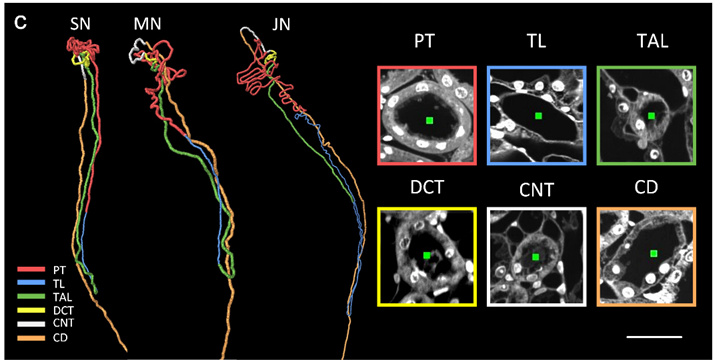

Observed structure · controlled conservation model
Recover amount and water together
The proximal tubule is a coiled segment, not a straight pipe. The prepared-mouse reconstruction provides structural context. The independent calculation below uses illustrative whole-kidney, human-scale inputs; its amounts are not assigned to one traced mouse nephron.
Where is the proximal segment?

PT · red: proximal tubule. TL = thin limb; TAL = thick ascending limb; DCT = distal convoluted tubule; CNT = connecting tubule; CD = collecting duct. SN/MN/JN are different superficial/middle/juxtamedullary examples. The source colors identify segments, not living tissue colors.
The source pairs author-traced tubules with PI optical-section morphology. The green points in the microscopy fields are tracing centers, not transported molecules. The original 30 µm bar applies to these two-dimensional fields, not to the differently enlarged traces.
Full anatomical gallery and source figure
Focus the region to pan with arrows, Home/End or Page Up/Down.
Change the recovered fraction
Gold: recovered toward the body. Blue: intermediate tubular delivery, not final urine. The bars show normalized amounts, not dimensions or volume changes in the photographed tubules.
Selected law: filtered water 0.125 L/min and sodium 17.5 mmol/min; fraction f recovered from both. Delivery = input × (1−f). Sodium concentration = delivered sodium / delivered water. The twelve-second sweep is presentation time, not proximal transit or transporter kinetics.
Read the same controlled comparison
| Selected state | Recovery | Water delivery | Na delivery | Na concentration |
|---|---|---|---|---|
| Filtered input | 0% | 125 mL/min | 17.5 mmol/min | 140 mmol/L |
| Proximal example | 65% | 43.75 mL/min | 6.125 mmol/min | 140 mmol/L |
- Identify the red source PT without changing its image.
- Recover 65% of the selected water and sodium inputs; recovered amounts are 81.25 mL/min and 11.375 mmol/min.
- Divide remaining 6.125 mmol/min by 0.04375 L/min: 140 mmol/L. This is intermediate delivery, not final urine.
Scope: equal sodium and water recovery is prescribed, not predicted by a transporter model. Preserved sodium concentration does not prove unchanged glucose, bicarbonate, every other solute or total osmolality. No apical/basolateral protein location, membrane crossing path, feedback or biological time course is inferred from these source pixels.
Li et al. (2024), Precise reconstruction of the entire mouse kidney at cellular resolution, Figure 6c, ©2024 Optica Publishing Group; Optica Open Access Publishing Agreement, noncommercial reuse/building upon with attribution. Four 8-week Tek-Cre::Ai47 mice; fixed 4% PFA, Lowicryl HM20, PI-labelled HD-fMOST 0.325×0.325×1µm sampling. Exact crop (0,365)–(715,725) from 1139×725 published-PDF figure, 715×360; source pixels unchanged. Print 130 mm, about140ppi, source-limited with readable external key. Source/model/reproduction record.